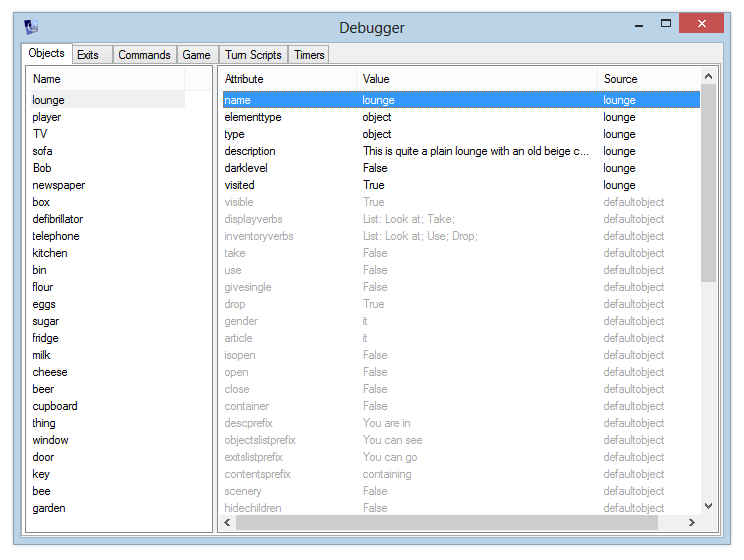

Types
Overview
“Types” let you share sets of attributes between objects. Instead of copying the attributes to the object, the object just references the underlying the type if it doesn’t have its own override for a attribute.
You can view all the attributes of an object using the Debugger, which is accessed via the Tools menu. Attributes from an inherited type are shown in grey.

Types are defined using a [
<type name="food">
<health type="int">0</health>
<eat>It looks tasty, but you're not hungry right now.</eat>
</type>
<type name="fruit">
<inherit name="food"/>
<health>10</health>
</type>
Default behaviour
If the ASLX defines a type called “defaultobject”, then it is applied to all objects – there is no need to specifically inherit from this type. Core.aslx uses this to define the default behaviour for objects:
- The displayverbs and inventoryverbs attributes are defaulted to give the standard buttons on the panes on the right-hand side of the Quest screen (“Look at”, “Take” and “Speak to” for the objects list, and “Look at”, “Use” and “Drop” for the inventory list)
- All objects are droppable by default
- The neutral gender and article (“it”) are set
- Default container attributes are set – by default the object is not a container, cannot be opened or closed, etc. This is just for convenience really – if we didn’t set these in the default type, then attributes such as “isopen” would default to null instead of false, which would make the container logic messier.
See also Using inherited types in the tutorial.